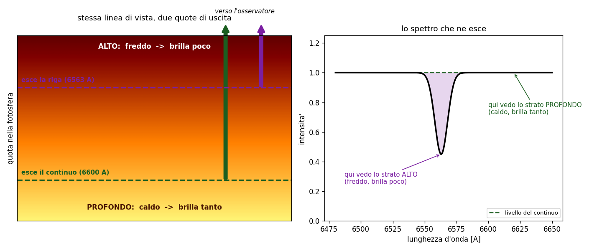
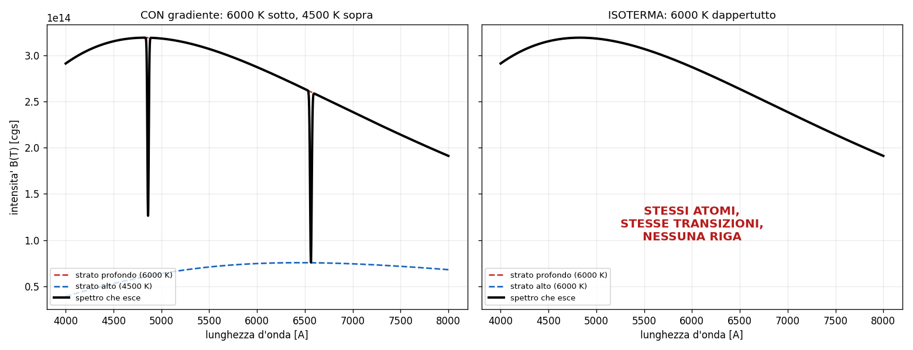

3 - Trasporto radiativo: perche' una riga e' scura o luminosa
Dispensa: cap. 3 (pag. 35-40).
Capitolo a mattoncini, ed e' il piu' importante di tutti: ogni pezzo si appoggia sul
precedente, quindi non saltarne nessuno anche se sembrano ovvi.
Questo capitolo e' il piu' importante di tutti, lo dico subito. Non perche' sia difficile:
perche' e' l' unico che vale sempre, stelle e nebulose, righe in assorbimento e righe in
emissione. Tutto il resto del corso e' un caso particolare di quello che c'e' scritto qui.
La domanda e':
la luce attraversa un gas. Quando esce, cos' e' cambiato?
1. Le due sole cose che possono succedere
Prendi un raggio di intensita' $I$ e mandalo dentro uno straterello di gas spesso $ds$. Ci sono due
cose che possono succedere, e solo due:
- il gas si mangia un po' di luce (assorbimento)
- il gas ci aggiunge un po' di luce (emissione)
Scritto:
$$\frac{dI}{ds} = -k I + \varepsilon$$
$k$ $\quad$ coefficiente di assorbimento, quanto il gas e' bravo a mangiare. Nota che moltiplica
$I$: piu' luce arriva, piu' ne viene tolta (togliere il 10% di tanto e' tanto).
$\varepsilon$ $\quad$ emissivita', quanta luce il gas ci mette di suo. Non moltiplica $I$: il gas
emette per conto suo, che tu gli mandi luce o no.
Attenzione: tutta l' asimmetria del problema sta qui. L' assorbimento e'
proporzionale a quello che c'e', l' emissione no. Da questa differenza esce tutto il resto.
2. Primo trucco: mettere insieme i due coefficienti
L' equazione cosi' com' e' ha due coefficienti scomodi. Si raccoglie $k$:
$$\frac{dI}{ds} = -k \left( I - \frac{\varepsilon}{k} \right)$$
e si da' un nome a quel rapporto, che si chiama funzione sorgente:
$$S \equiv \frac{\varepsilon}{k}$$
quindi
$$\frac{dI}{ds} = -k (I - S)$$
2.1 Che cos'è $S$, in parole
$S$ e' il rapporto fra quanto il gas emette e quanto assorbe. Dimensionalmente e' un' intensita', e
si legge cosi':
$S$ e' l' intensita' verso cui il gas sta cercando di portare la radiazione.
Guarda l' equazione: se $I$ e' piu' grande di $S$, la derivata e' negativa e $I$ cala. Se $I$ e'
piu' piccola di $S$, la derivata e' positiva e $I$ cresce. Se sono uguali, non succede niente.
Il gas tira sempre $I$ verso $S$.
2.2 Il criterio generale (da qui esce tutto il corso)
| se | vedi |
|---|---|
| $I > S$ | assorbimento (riga scura) |
| $I < S$ | emissione (riga luminosa) |
| $I = S$ | niente riga |
Occhio a questo: questo e' il criterio generale, e non dipende da niente. Non
dipende dal fatto che tu stia guardando una stella o una nebulosa, non dipende dalla temperatura,
non dipende dalla densita'. Se ti ricordi solo una cosa di tutto il corso, ricordati questa: che
tipo di riga vedi dipende dal confronto fra la luce che arriva e la funzione sorgente del gas.
3. Secondo trucco: misurare il cammino in modo furbo
Dire "lo strato e' spesso un metro" non serve a niente, perche' dipende da quanto e' denso e da
quanto assorbe. Quello che conta e' quanto assorbimento c'e' lungo il cammino. Quindi si
cambia variabile:
$$d\tau = k \, ds$$
$\tau$ si chiama profondita' ottica ed e' adimensionale. Non misura una distanza: misura
quanto e' opaco il cammino.
| $\tau$ | come si dice | quanta luce passa |
|---|---|---|
| $\tau \ll 1$ | otticamente sottile | quasi tutta |
| $\tau = 1$ | - | il 37% ($1/e$) |
| $\tau \gg 1$ | otticamente spesso | quasi niente |
Attenzione: otticamente sottile vuol dire $\tau \ll 1$. Il numero $2/3$ che si incontra piu'
avanti e' un' altra cosa: e' la profondita' a cui si definisce la fotosfera di una stella.
4. La soluzione
Con $\tau$ al posto di $s$, l' equazione si integra e viene:
$$I = I_0 e^{-\tau} + S (1 - e^{-\tau})$$
$I_0 e^{-\tau}$ $\quad$ quello che resta della luce di partenza: attenuato esponenzialmente
$S(1 - e^{-\tau})$ $\quad$ quello che il gas ci ha messo di suo
4.1 Leggerla nei casi limite
E' una media pesata fra $I_0$ e $S$, e il peso e' $e^{-\tau}$.
Se $\tau \to 0$ (gas trasparente): $e^{-\tau} \to 1$, quindi $I \to I_0$. Non e' cambiato
niente, la luce passa e basta.
Se $\tau \to \infty$ (gas opaco): $e^{-\tau} \to 0$, quindi $I \to S$. Ti sei dimenticato
completamente di $I_0$: qualunque cosa ci fosse dietro, tu vedi solo il gas.
Vale la pena dirlo: questo secondo caso e' il motivo per cui esiste il concetto di
fotosfera. Guardando una stella non vedi il centro: vedi lo strato dove $\tau$ diventa circa 1
(per convenzione $2/3$), perche' tutto quello che sta sotto e' schermato. La "superficie" di una
stella e' semplicemente la profondita' a cui il gas smette di essere trasparente.
5. Quando $S$ diventa Planck
Fin qui $S$ e' solo un rapporto fra due coefficienti. Ma se il gas e' in equilibrio
termodinamico locale (LTE), cioe' se le collisioni sono cosi' frequenti da imporre a tutto quanto
la stessa temperatura $T$, allora vale la legge di Kirchhoff e viene fuori questa:
$$S = B_\nu(T)$$
cioe' la funzione sorgente diventa il corpo nero a quella temperatura.
Questa uguaglianza vale solo in LTE. Nelle nebulose non vale, ed e' esattamente per quello che
le nebulose si comportano in modo cosi' diverso.
6. Il caso delle stelle: perché le righe sono scure
Adesso mettiamo insieme i pezzi e rispondiamo alla domanda vera.
Siamo in una fotosfera stellare, densa, in LTE, quindi $S = B(T)$. La temperatura cala salendo
verso l' esterno.
Il punto e' questo: il coefficiente di assorbimento $k$ non e' lo stesso a tutte le lunghezze
d' onda. Alla lunghezza d' onda di una riga il gas assorbe molto di piu':
$$k_{riga} \gg k_{continuo}$$
Conseguenza diretta: $\tau$ arriva a 1 prima, cioe' piu' in alto.
- nel continuo (fuori dalla riga): vedi fino in fondo, uno strato profondo e caldo
- dentro la riga: ti fermi molto prima, in uno strato alto e freddo
E siccome $S = B(T)$ e $B$ cresce con $T$, lo strato freddo emette meno. Quindi dentro la riga
arriva meno luce che nel continuo: la riga e' scura.

6.1 La cosa che chiude il ragionamento
E qui ne segue una cosa che secondo me e' il modo migliore di verificare se hai capito davvero
questo capitolo:
senza un gradiente di temperatura non esiste nessuna riga.
Se la fotosfera fosse isoterma, tutti gli strati avrebbero la stessa $S$, e non importerebbe da
quale profondita' ti arriva la luce: vedresti sempre la stessa intensita'. Spettro liscio, nessuna
riga, ne' scura ne' luminosa.
Le righe non le fa il gas: le fa il gradiente. Il gas decide solo a che lunghezza d' onda
succede.

7. Il caso delle nebulose: perché le righe sono luminose
Stesso identico criterio, situazione rovesciata.
Guardi una nebulosa. Alle sue spalle non c'e' niente: $I_0 \approx 0$, e il fondo cielo e'
buio. Il gas invece emette, quindi $S > 0$.
Quindi $I < S$, e per il criterio del punto 2.2 vedi emissione.
E siccome il gas e' rarefatto, $\tau \ll 1$ nelle righe: tutti i fotoni prodotti escono senza
essere riassorbiti. Questo semplifica moltissimo la vita, e ci si torna nel
capitolo 5.5.
7.1 Lo stesso gas, due risposte diverse
Su questo fermiamoci un secondo.
Non e' che le nebulose siano fatte di roba diversa dalle stelle. E' lo stesso idrogeno. Quello che
cambia e' cosa c'e' dietro:
| cosa c'e' dietro | $I_0$ | risultato | |
|---|---|---|---|
| fotosfera | strati piu' caldi e profondi | grande | $I > S$ -> assorbimento |
| nebulosa | spazio vuoto | ~0 | $I < S$ -> emissione |
Se metti una nube di gas davanti a una stella la vedi in assorbimento, se la metti di fianco
la vedi in emissione. Stessa nube.
8. In breve
- $dI/ds = -kI + \varepsilon$: solo due cose possono succedere, si toglie luce o se ne aggiunge
- $S = \varepsilon/k$ e' l' intensita' verso cui il gas tira la radiazione
- criterio generale: $I > S$ assorbimento, $I < S$ emissione, $I = S$ niente riga
- $\tau$ misura l' opacita' del cammino, non la distanza. $\tau = 1$ -> passa il 37%
- $I = I_0 e^{-\tau} + S(1 - e^{-\tau})$: media pesata fra quello che entra e quello che il gas
vorrebbe - $S = B(T)$ solo in LTE
- nelle stelle le righe sono scure perche' dentro la riga vedi uno strato piu' alto e piu' freddo
- senza gradiente di temperatura non c'e' nessuna riga
- nelle nebulose sono luminose perche' dietro non c'e' niente
Domande tattiche
1. Hai una nube di gas e una stella. Come devi disporle per vedere le righe in assorbimento?
E per vederle in emissione? La nube e' sempre la stessa. (-> sezioni 2.2 e 7.1)
2. Una fotosfera perfettamente isoterma: che spettro produce? Rispondi ragionando su $S$, non
a memoria. (-> sezione 6.1)
3. Perche' guardando il Sole non vedi il suo centro? La risposta sta in una formula sola.
(-> sezione 4.1)
4. Dentro una riga il gas assorbe molto di piu' che nel continuo. Come mai questo la rende
scura e non luminosa? Fai il percorso completo, sono tre passaggi. (-> sezione 6)
5. In che condizioni puoi scrivere $S = B(T)$? E cosa succede se lo fai in una nebulosa?
(-> sezione 5)